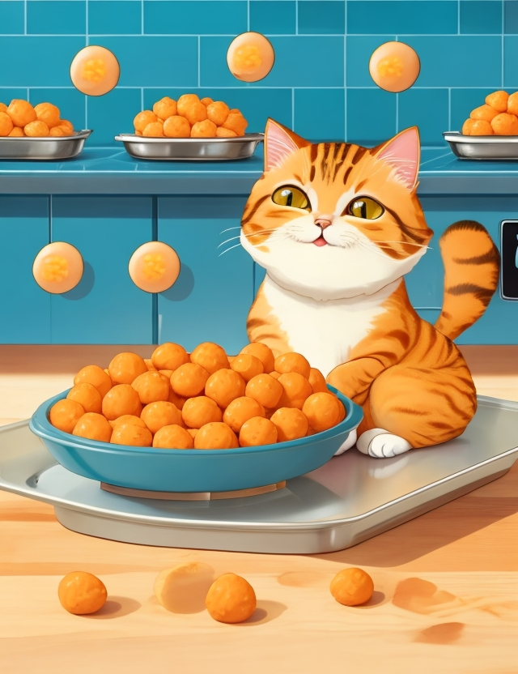

Cheese Balls Recipe
Description
These cheesy balls are something to write home about!

Ingredients
- Half a cup of corn starch
- Powdered garlic
- Cheese blocks (can be plant-based)
- Salt
- Water
- Yeast
Instructions
- Mix the corn starch with the salt
- Chop the cheese into small pieces
- Add the cheese to the starch
- Add salt to taste
- Add half a spoon of yeast
- Add 300ml of warm water
- Mix until soft
- Split into little bits and form ball-shaped bits
- Bake for 25'
- Enjoy!